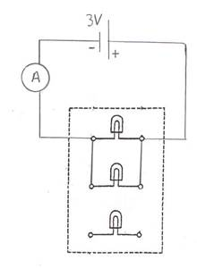
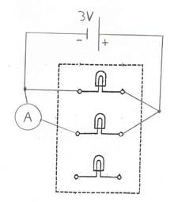

Section: _____ Partner’s Last Name: ____________________ Your Name: __________________
Part A: A Simple Circuit
Set up the circuit shown in Figure 11-A, using the 3V battery, the first bulb of the three-bulb board, and 2 wires. On Figure 11-A, draw red arrows showing the direction of the current when the switch is on. Draw black arrows showing the direction of electronflow. Turn on the switch. What is observed?
With the switch still on, loosen the bulb. What is observed?
Why?
Tighten the bulb (not too tight). Turn off the switch. Use another wire to set up the circuit shown in Figure 11-B, where a metal spoon is made part of the circuit.
Turn on the switch. What is observed?
Is the metal spoon a conductor, or an insulator?
Turn off the switch and replace the metal spoon with the plastic spoon.
Turn on the switch. What is observed?
Is the plastic spoon a conductor, or an insulator?
Turn off the switch, remove the plastic spoon, and connect the ammeter in its place as shown in the figure to the right.
Turn on the switch and measure and record the current to the nearest 0.01 A.
Turn off the switch. Disconnect the ammeter, and replace it with one wire, as previously. Connect the ammeter between the positive terminal of the battery and the bulb. Check to see that the positive connection on the ammeter is toward the positive side of the battery.
Turn on the switch and measure and record the current to the nearest 0.01A.
Was the current the same (within experimental error) on both sides of the circuit?
Turn off the switch, disconnect the ammeter, and again use one wire to connect the positive terminal of the battery to the bulb. Connect a wire to the common input of the voltmeter and a wire to its middle input, where the scale will read 0 to 3 V.
Turn on the switch. Touch the voltmeter’s red connection (+) to the positive side of the bulb and the black connection (-) to the negative side of the bulb as shown in the figure above. This measures the voltage across the bulb. Read the voltage, to the nearest 0.05V, on the scale that goes from 0 to 3V.
In similar fashion, being careful to touch the correct leads to the proper places, measure the voltage across the battery and then turn off the switch.
Use the value of the current from Part A.3 and of the voltage across the bulb, along with Ohm’s law, to calculate the resistance of the bulb.
Setup:
Answer:
Use P = IV to find the power used by the bulb.
Setup:
Answer:
Part B: The Effect on Current of Changes in Voltage and Resistance
Use the same setup as in A.3, with the ammeter in the circuit. Turn on the switch and note the brightness of the bulb.
Turn off the switch and replace the regular bulb with one that has lower resistance as shown in the figure on the right.
Before turning on the switch, use Ohm’s law (I = V/R) to predict what will happen to the current (I) in the circuit when the battery voltage (V) stays the same, and the bulb resistance (R) is decreased.
(larger/smaller/same)
An increase in current will cause a brighter bulb; a decrease in current will cause a dimmer bulb. According to your prediction of the change in current, should this bulb be brighter, or dimmer, than the first bulb?
Now, turn on the switch. Results? Current value:
Brightness:
Were the changes in current and brightness of the bulb consistent with Ohm’s law?
(yes/no)
Turn off the switch and replace the low resistance bulb with the original bulb.
Change the voltage from 3V to 6V. Keep the ammeter connected as shown in the figure below. According to Ohm’s law, if the resistance stays the same and the voltage increases, what should happen to the current?
(larger/smaller/same)
Therefore, what should happen to the brightness of the bulb?
(brighter/dimmer/same)
Turn on the switch. What is the value for the current?
Is the bulb brighter or dimmer, with the 6 V than with the 3 V source?
Carefully use the voltmeter to measure the voltage across the bulb. Be sure the black connection on the voltmeter is connected to the side of the bulb connected to the negative side of the battery. Voltage:
Turn off the switch. Use Ohm’s law to find the bulb’s resistance when this voltage is used.
Setup:
Answer:
Is the bulb’s resistance still the same as found in Part A.4 where 3 V were used?
(yes/no). Ohmic resistors have constant resistance for any current.
Therefore, is a light bulb an ohmic, or a non-ohmic, resistance?
Use P = IV to find the power now used by the bulb.
Setup:
Answer:
Part C: A Series Circuit
Note: Be sure to switch the voltage back to 3 V!
Set up the bulb board, the 3 V battery, and the ammeter so that two regular bulbs are connected in series as shown in the figure below. In the space at the right, sketch a schematic of the circuit using the shorthand notation shown on page 129 of the lab manual.
Get the instructor’s approval (initials) here before turning on the switch.
Turn on the switch. Are the bulbs equally bright?
Are they brighter, or dimmer, than when only one regular bulb was in the circuit?
What does the brightness indicate about the current through each bulb?
What is the value given by the ammeter for the current through the two bulbs in series?
Is the current less than in Part A.3, where only one bulb was used?
Turn off the switch. Connect all three bulbs in series.
Before turning on the switch, predict if all the bulbs will be of equal brightness.
(yes/no)
Will they be brighter, dimmer, or the same as when two bulbs were in the circuit?
Now, turn on the switch and test your brightness predictions. Results?
What does this indicate about the current through the bulbs?
What is the value given by the ammeter for the current for three bulbs in series?
Is that less than the current when only two bulbs were in series?
With the switch still on, loosen one of the bulbs. What happens, and why?
Retighten the bulb and turn off the switch.
Part D: A Parallel Circuit

Set up the bulb board, the 3V battery, and the ammeter, so that two bulbs are connected in parallel as shown in the figure below. In the space at the right, sketch a schematic of the circuit using the shorthand notation shown on page 129.
Get the instructor’s approval (initials) here before turning on the switch.
According to the reading assignment in the lab manual, should the current through each of the two bulbs be greater, or less, than when the two were in series?
Turn on the switch. Are the bulbs equally bright?
Are the bulbs brighter, or dimmer, than when the two bulbs were in series?
What does the brightness indicate about the current through each bulb?
What is the value for the total current, as given by the ammeter?
Is this less, more, or the same as when two bulbs were in series (see Part C.1)?
Is this less, more, or the same as when only one bulb was used (see Part A.3)?
Do two bulbs in parallel really allow more current than just one bulb by itself?
Turn off the switch.
Connect the ammeter to measure the current through one bulb as shown in the figure below. Turn on the switch and measure the current then turn off the switch.
What is the current?

Connect the ammeter to measure the current through the other bulb as shown in the figure below. Repeat the current measurement. What is the current?
Do the last two current values add up to the total current (allowing for experimental error)?
Turn off the switch. Connect all three bulbs in parallel. Before turning on the switch, predict whether all the bulbs will be of equal brightness. Will they be brighter, or dimmer, than when only two bulbs were in the circuit?
Turn on the switch and test your brightness predictions. Results?
What does this indicate about the current through the bulbs?
What is the value for the current, as given by the ammeter?
With the switch still on, loosen one of the bulbs. What happens, and why?
Turn off the switch, and then disconnect all wires and meters.